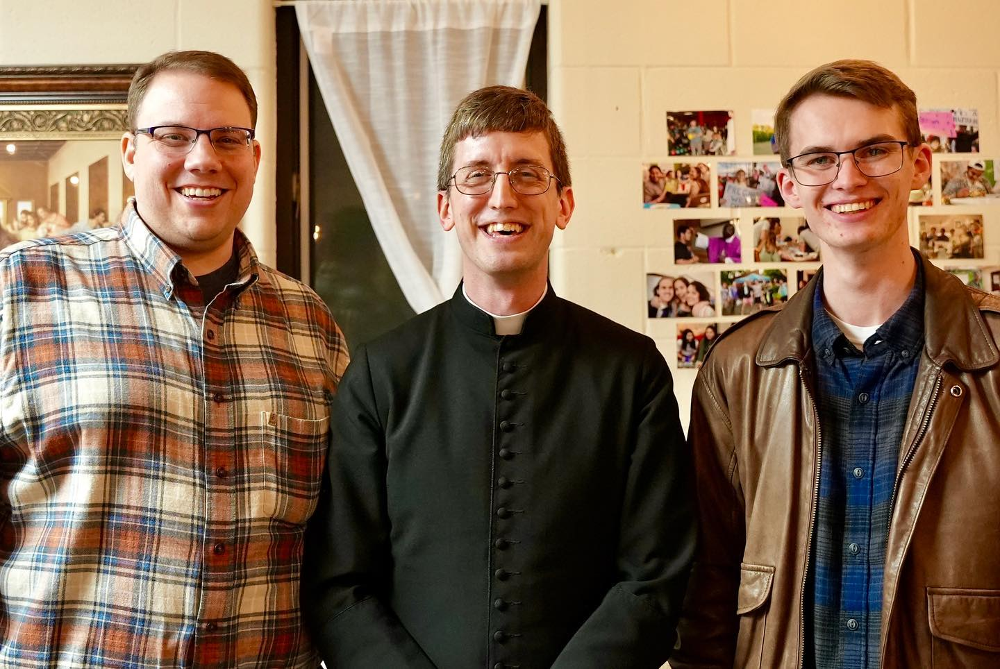

Welcome from Fr. Innocent
It is great to be back to school. I know you loved your vacation but also love to return to continue to pursue your personal ambition through a great education at UNC Charlotte. See how time flies. Summer seemed as if it would last forever when we left. But here we are, it’s over like a lightning strike. Fall session has begun, and before we know it, it's Spring. So, it's time to settle down immediately for action as there is no time to waste. Time waits for no one.
I welcome you all, new and returning students, to a new academic year. Our theme for the year is the Divine Mercy: The Lord is kind and merciful, slow to anger and abounding in love (Psalm 103:8). Taken from the Book of Psalms, the mission is leading us to explore the love, mercy, compassion, and forgiveness of our loving God through Jesus Christ who gave his life for us.
We shall listen to speakers share their experiences of God's love with us, their love for Christ and Christ's love in the Sacraments. We shall share this love among ourselves, socialize, play, work together in community service, visit Jesus in the Blessed Sacrament, attend Masses together, return to God in the Sacrament of Reconciliation and find joy in our faith journey. We shall organize retreats, both diocesan and local, for our students.
But CCM is particularly focused on building up a joyful Catholic community on campus and helping students love who they are and who the Lord is calling them to become. We are here to help you. I am available to listen and advise whenever you call on me. Do not hesitate. The student leadership team is set to give us amazing journey in the faith and community life, and the student leaders are also very much available to lend help when needed.
CCM is your home away from home. Feel at home every time you come to the lounge; it’s always your home. Relax, study, socialize, play available games, and make yourself comfortable. Make new friends when we meet as a community and share in the life of the ministry. Be part of CCM in its entirety so that as you pass through the CCM, the CCM can also pass through you. Respect everyone and earn everyone’s respect. One final thing, the CCM is religious and spiritual, not political. When we assemble, we discus God and us, not politics. Welcome back once again.
